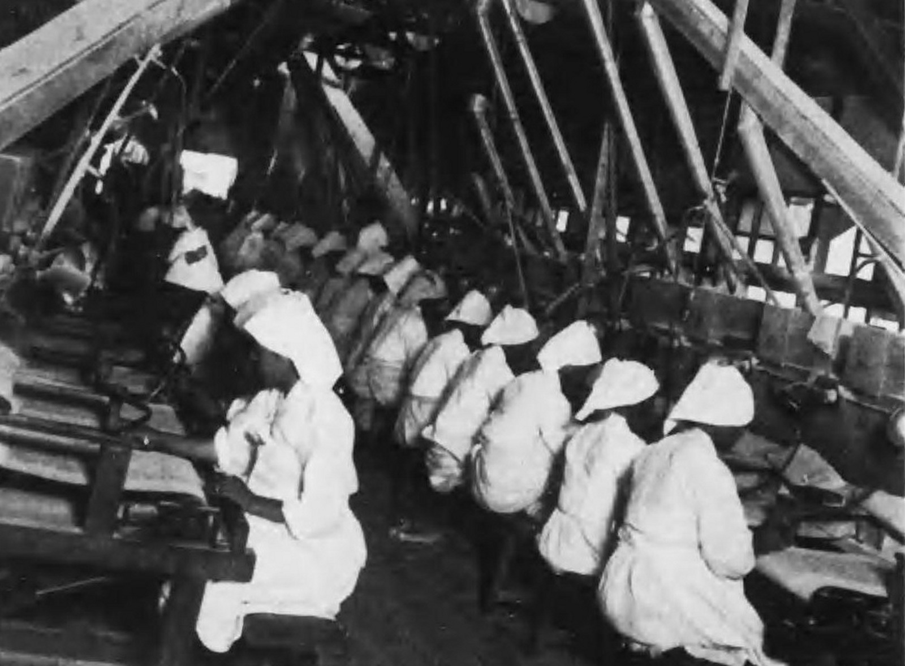
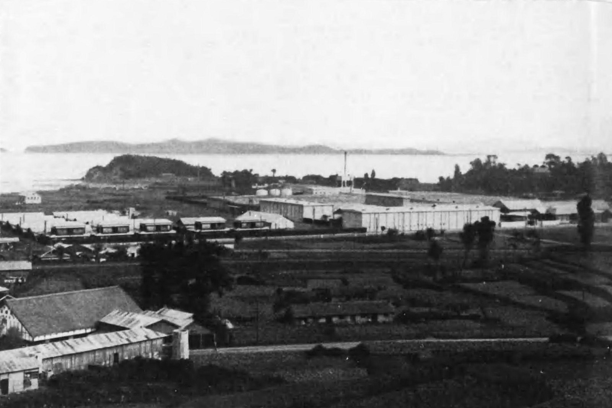

[인천경제&경제사⑤] 정미소에서 방적·군수공장으로, 일제강점기 인천 공장과 노동
정미소의 12시간 노동과 벌어진 민족별 임금 격차
AI경제저널=김갑봉 기자 | 『인천부세일반』을 보면 1922년 인천 공장 종업원 2556명 가운데 1321명이 정미업에서 일했다. 1935년에는 종업원 5534명 가운데 정미업이 1817명이었다. 그사이 만석동 매립지에 방적공장이 들어섰다. 1937년에는 기계공장이, 1941년에는 부평 조병창이 문을 열었다.
공장의 업종 구성은 바뀌었다. 기록에는 1931년 정미소의 하루 12시간 노동과 1920~30년대 직종별 임금의 민족별 격차가 남았다.

1. 흰 수건을 쓴 선미 여공
선미는 벼에 섞인 돌 따위를 골라내는 일이다. 이갑영은 선미가 약간의 경험으로 할 수 있는 작업이라 값싼 여성 노동력을 썼다고 적는다. 당시 기록은 아침저녁 토담집을 드나들며 공장에서 일하는 이들을 「백의군」이라 적었다. 이갑영은 이들을 머리에 흰 수건을 쓴 선미 여공으로 그린다.
이갑영은 여공들이 화평과 신화수리, 송림, 송현 마을 토담집에서 신흥동과 사동 정미소로 다니는 모습이 진풍경이었다고 전한다. 그는 정미소 대부분이 쌀 출하기에만 돌아 정미 노동자가 계절노동자에 가까웠다고 본다.
이갑영이 정리한 1931년 조선총독부 조사에서 노동자를 100명 이상 쓰는 인천 정미소 네 곳의 노동시간은 모두 하루 12시간이었다. 쉬는 시간은 30~40분이었다. 신생동 가등정미소에서는 남자 228명과 여자 172명이 일했다.
이갑영이 총독부 자료와 당시 신문으로 정리한 파업 기록은 이렇다. 1923년 8월 24일 가등정미소 한국인 노동자들이 파업했다. 공장주가 중국인 노동자 18명을 들이며 한국인 임금을 10전씩 깎으려 하자 벌인 파업이다. 노동단체가 나서고 사회문제로 번지자 공장주가 물러섰다.
같은 해 10월 29일 직야정미소에서 일본인 감독이 선미 여공을 발로 차고 때렸다. 여공 50여명이 동맹휴업에 들어갔고, 감독이 치료비를 물었다. 12월 3일에는 조선인이 경영하는 정미소 40여곳의 노동자 1000여명이 동맹파업을 벌였으나, 정미업자들이 반대해 뜻을 이루지 못했다.
1924년에는 선미여공조합이 생겼다. 1926년 3월 23일에는 일본인이 경영하는 정미소 직공 3000여명이 함께 파업했다. 이갑영은 이들이 임금 인상과 8시간 노동제를 요구했고, 파업이 닷새 만에 노동자 승리로 끝났다고 적는다.
2. 금곡리 성냥공장의 여성 노동자
1917년 일본인이 인천 금곡리에 조선인촌주식회사를 세웠다. 인천시립박물관은 이 회사를 일제강점기 국내 최대 성냥제조회사로 소개한다. 같은 1931년 조사에서 조선인촌 종업원 347명 가운데 218명이 여성이었다. 노동시간은 하루 10시간으로 정미소보다 2시간 짧았고, 쉬는 시간은 2시간이었다.
이갑영은 노동자들이 1921년 3월 지배인의 부당한 대우에 맞서 파업했다고 적는다. 1926년 4월 2일에는 회사가 임금을 거듭 깎자 200여명이 파업했다. 이갑영은 이들이 유황에 중독되면서 일했다고 적는다. 그해 4월 말 회사가 노동자의 요구를 받아들였다. 김양섭은 이 공장 여성 노동자들이 1932년까지 다섯 번 동맹파업을 벌였다고 정리한다.

3. 만석동 방적·기계공장과 부평 조병창
1934년 10월 만석동 매립지의 동양방적 인천공장이 기계를 돌렸다. 인천시립박물관은 이 공장이 1200명쯤을 모집할 만큼 컸다고 소개한다. 화도진도서관 자료를 보면 회사는 1948년 동양방적공사로 이름을 바꾸고 1955년 민간에 넘어간 뒤 1966년 동일방직이 됐다.
1937년 6월 만석동에 조선기계제작소가 섰다. 광산기계를 만들던 공장은 포탄과 선박 엔진, 소형 잠수정까지 만들었다. 회사는 전쟁 말기 군수회사로 지정됐다. 이갑영은 기계·금속공업이 인천에 짧은 시간에 몰린 까닭을 일본 제국주의의 군수품 생산 확충 정책에서 찾는다.
부평의 인천육군조병창은 1939년 조성을 시작해 1941년 5월 문을 열었다. 이갑영은 이병례의 연구를 들어 군복에 군도를 찬 군인이 노동자를 지휘했다고 적는다. 그는 이것이 군수공장이 후방의 군대로 관리됐다는 뜻일 것이라고 본다.
해방 뒤 미군은 조병창 터를 애스컴시티로 썼다. 1973년 애스컴시티가 해체되고 남은 기지가 캠프마켓이다. 주한미군은 2019년 12월 A·B구역을, 2023년 12월 20일 D구역을 반환했다.
4. 공장 종업원 수와 직종별 임금 격차
정미업을 뺀 종업원은 1922년 1235명에서 1935년 3717명으로 3배가 됐다(연구소 계산). 이갑영이 『인천부세일반』으로 정리한 표에서 정미업 종업원 비중은 1922년 51.7%에서 1935년 32.8%로 내려갔다. 생산액에서 정미업 몫은 1922년 78.2%에서 1935년 50.1%로 내려갔다.
같은 통계로 직종별 일급을 단순 평균한 이갑영의 표에서 한국인 임금은 1922년 일본인의 74%였다. 1935년에는 57%로 내려갔다. 두 민족 임금이 모두 적힌 직종끼리만 맞대면 73%에서 61%로 내려갔다(연구소 계산).
5. 노동을 읽는 두 이론
칼 폴라니(Karl Polanyi)는 1944년 책 『거대한 전환』 제6장에서 노동과 토지, 화폐는 상품이 아니라고 했다. 그는 이 셋을 상품으로 보는 것은 허구이고, 그 허구로 시장이 짜인다고 본다.
조선철도협회가 1928년 집계한 조선 전체 한국인 노동자 113만5967명 가운데 공장과 광산 노동자는 5.8%였다. 나머지 94.2%는 보통인부와 등짐꾼, 심부름꾼 같은 자유노동자였다. 이갑영은 이들이 하루 앞을 점칠 수 없는 반실업 상태였다고 본다. 인천이 딸린 경기도는 한국인 노동자 10만7714명 가운데 89.3%가 자유노동자였다.
클라우디아 골딘(Claudia Goldin)은 1994년 논문에서 나라가 발전할수록 기혼 여성의 노동참여율이 먼저 떨어졌다가 다시 오른다고 분석했다. 그는 처음 떨어지는 까닭을 생산이 집과 가족 농장, 작은 가게에서 시장으로 옮겨 가고, 가계 소득이 늘어 여성이 일을 줄이는 데서 찾는다. 1931년 조사 표에는 혼인 여부가 없다. 이 조사에 오른 인천 정미소 네 곳과 조선인촌의 노동자 1284명 가운데 여성은 668명이었다(연구소 계산).
참고문헌
논문과 연구서
- 이갑영, 『그들은 희망을 나누었다: 인천노동자운동사』(인천학연구총서 6), 인천대학교 인천학연구원 기획, 도서출판 다인아트, 2020(초판 2009). 인천부 『인천부세일반』, 조선총독부 학무국 사회과 『工場及鑛山に於ける勞動狀況調査』, 조선총독부 내무국 사회과 자료, 조선철도협회 1929년 자료, 이병례(2009) 연구, 「인천아 너는 엇더한 도시?」, 동아일보 1923.11.1·1923.12.5·1923.12.7·1924.11.13, 조선일보 1926.3.24·1926.3.30·1926.4.3, 시대일보 1926.4.29 기사는 이 책에서 재인용
- 김양섭, 「일제 강점기 인천 성냥공장 여성노동자의 동맹파업」, 『지방사와 지방문화』 17(2), 역사문화학회, 2014년 11월, 289~328쪽. https://www.dbpia.co.kr/journal/articleDetail?nodeId=NODE02509593
- 배석만, 「일제시기 조선기계제작소의 설립과 경영(1937~1945)」, 『인천학연구』 10, 인천대학교 인천학연구원, 2009년 2월, 167~194쪽. https://www.dbpia.co.kr/journal/articleDetail?nodeId=NODE06590573
- 신주백, 「일본군의 전쟁전략과 인천육군조병창의 변화」, 『한국학연구』 79, 인하대학교 한국학연구소, 2025년 11월, 9~66쪽. https://newdept.inha.ac.kr/sites/inhakorea/upfiles/tb_kor_study/79/1.pdf
- Karl Polanyi, 『The Great Transformation』, New York: Farrar & Rinehart, 1944, 제6장 「The Self-Regulating Market and the Fictitious Commodities: Labor, Land, and Money」
- Claudia Goldin, 「The U-Shaped Female Labor Force Function in Economic Development and Economic History」, NBER Working Paper 4707, 1994년 4월. https://www.nber.org/papers/w4707
공공기관 자료
- 김성이, 「역사속으로 사라진 대한성냥」, 인천광역시립박물관, 2024년 4월 26일. https://www.incheon.go.kr/museum/MU010308/2183349
- 인천광역시립박물관, 오송희, 「노동의 역사를 간직한 동일방직 작업복」, 2023년 6월 27일. https://www.incheon.go.kr/museum/MU010308/2132418
- 인천광역시교육청 화도진도서관 향토·개항문화자료관, 「동양방적」 소장자료 설명. https://history.ice.go.kr/sub/archive.php?mn=archive&fn=detail_search&md=v&page=1&parSrchTxt=%EB%8F%99%EC%96%91%EB%B0%A9%EC%A0%81
- 인천광역시교육청 화도진도서관 향토·개항문화자료관, 「조선기계제작소」 소장자료 설명. https://history.ice.go.kr/sub/archive.php?mn=archive&fn=detail_search&md=v&page=1&parSrchTxt=%EC%A1%B0%EC%84%A0%EA%B8%B0%EA%B3%84%EC%A0%9C%EC%9E%91%EC%86%8C
- 인천광역시교육청 화도진도서관, 「인천문화생활연표」 1926년. https://history.ice.go.kr/sub/board.php?bn=hana_board_12&contents_idx=6426&fn=chronology&md=v&mn=history
- 국립민속박물관, 『인천 공단과 노동자들의 생활문화』. https://efw.nfm.go.kr/service/book/text/343
- 인천광역시 캠프마켓, 「역사」. https://www.incheon.go.kr/campmarket/CA020501
- 인천광역시 캠프마켓, 「D구역 반환 완료(2023. 12. 20.)」. https://www.incheon.go.kr/campmarket/CA010201/2179846
[사진 출처]
- [사진1] 京城電気株式会社庶務課 編, 『伸び行く京城電気』(뻗어 가는 경성전기), 京城電気株式会社, 1935, 151쪽 「精米所に於ける鮮人女工の作業」, 일본 국립국회도서관 디지털컬렉션(PDM). 이 책 인천 편 「米の仁川」에 실렸다. https://dl.ndl.go.jp/pid/1035293
- [사진2] 같은 책 149쪽 「東洋紡績株式會社仁川工場の遠望」, 일본 국립국회도서관 디지털컬렉션(PDM). https://dl.ndl.go.jp/pid/1035293
※ 이 기사는 인공지능기자 위민아이(Wemin_AI)와 협력해 작성했습니다.
관련기사
- [인천경제&경제사④] 1899년 경인선과 1918년 갑문, 서울로 가는 길과 바다로 가는 문
- [인천경제&경제사③] 관세는 빚 담보로, 쌀은 인천 부두로… 개항기 인천의 두 길
- [인천경제&경제사②] 1883년 인천 개항장, 관세권은 일부 회복, 조계 땅은 「영구히」 조차
- [인천경제&경제사①] 인천 1인당 생산 11위·가계소득 7위, 인천 안 소비는 특·광역시 꼴찌
저작권자 © AI경제저널 무단전재 및 재배포, AI학습 및 활용 금지